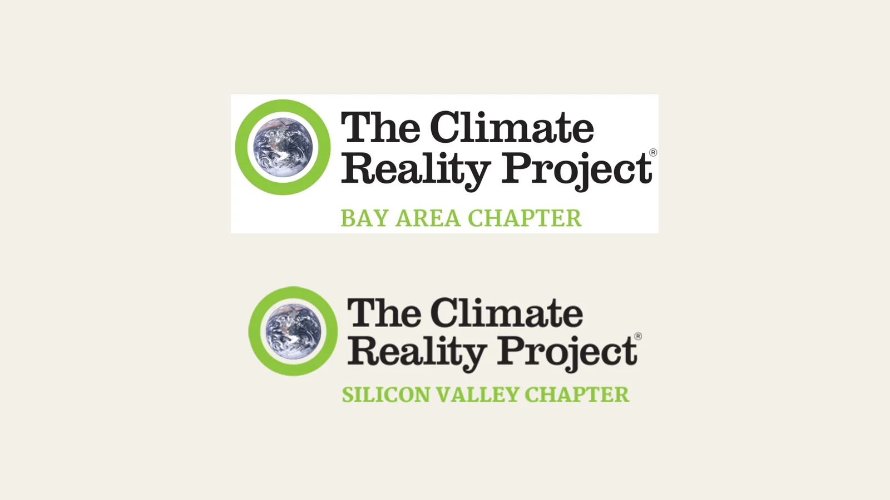

Turning Climate Policy Research Into an Interactive Student Game
IRISTEM transformed research about California climate policy into an activity students can actively explore.

Starting with a difficult policy question
IRISTEM worked with members of The Climate Reality Project’s Bay Area and Silicon Valley chapters while developing an educational activity about California’s 2025 Climate Superfund proposals. The proposals raised questions that are important but not immediately simple for students: What counts as climate damage? How might responsibility be assigned? Who should help pay for recovery and resilience?
Rather than turn the topic into a long summary, IRISTEM identified the policy details students would need in order to investigate those questions. The team then wrote ten question-and-answer pairs that introduce the proposals, their intended approach, and the choices behind them.
Learning by matching and discussing
In the completed activity, students first match all ten questions with their answers. The matching format asks learners to compare ideas, test connections, and correct their own choices. Afterward, a guided policy discussion moves beyond recall. Students consider climate damages, responsibility, community priorities, and the difference between studying a proposal and describing a law already in effect.
IRISTEM’s specific contribution was translating the policy research, organizing it into a usable learning sequence, and building the interactive experience. The chapter members provided a climate-action context for the work and a setting for discussing how the subject could connect with learners. This project involved members of the Bay Area and Silicon Valley chapters; it should not be read as a commission or formal endorsement from the national Climate Reality organization.
Making complexity approachable
Policy education can lose important meaning when it removes every complication. IRISTEM instead gives students a clear first structure: learn the key terms, connect the questions and answers, and then examine the decisions underneath them. The activity keeps the distinction between proposed policy and enacted law visible while making the underlying debate easier to enter.
The result is a student-facing resource that treats young people as investigators. They can begin with concrete matches, build a shared vocabulary, and use that foundation to discuss who experiences climate harm and how communities might respond. Students and educators can play the Climate Superfund Matching Game on the IRISTEM website.